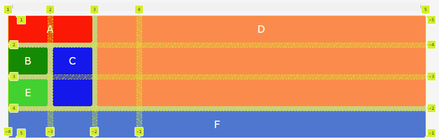
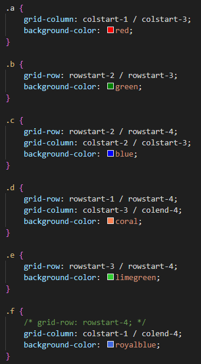
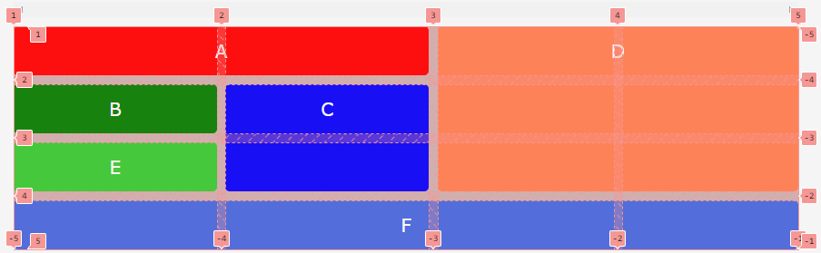
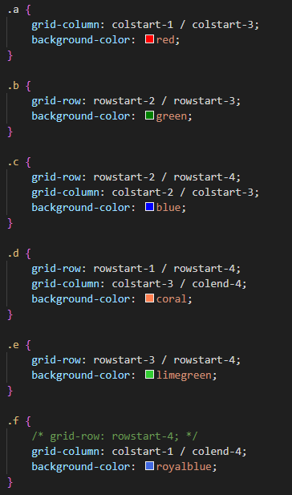
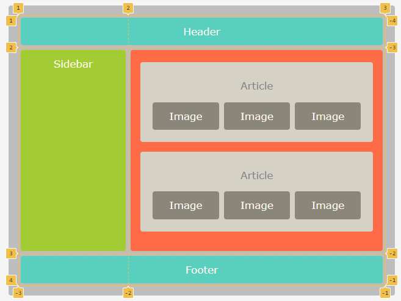
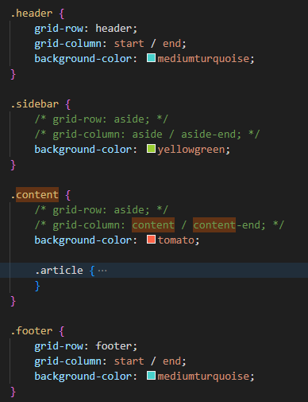

Si bien siempre se puede hacer referencia a las líneas de la cuadrícula por su índice numérico, los nombres de las líneas pueden hacer que las propiedades de ubicación de la cuadrícula sean más fáciles de entender y mantener. Los nombres de línea se pueden asignar explícitamente con las propiedades grid-template-rows y grid-template-columns, o se pueden asignar implícitamente mediante áreas de cuadrícula nombradas con la propiedad grid-template-areas.
Siempre tienes disponibles los números de línea para usar, incluso si nombras algunas o todas tus líneas.
El nombre tiene que estar entre corchetes y se permite poner mas que un nombre separado por un espacio.
En el código a continuación, se puede ver que nombro la primera columna [colstart-1 menu] y a continuacion viene la franja la primera columna con un ancho de 100 píxeles.
grid-template-columns: [colstart-1 menu] 100px [colstart-2 menu-fin contenido] 100px [colend-2 contenido-fin];Habiendo nombrado las líneas, puede usar los nombres, en lugar de los números.
grid-template-columns: [colstart-1] 100px [colstart-2] 100px [colstart-3] 100px [colstart-4] 100px [colend-4];
grid-template-rows: [rowstart-1] auto [rowstart-2] auto [rowstart-3] auto [rowstart-4] auto [rowend-3];
La distribucion no es uniforme ya que las columnas tienen un ancho fijo de 100px
 
grid-template-columns: [colstart-1] auto [colstart-2] auto [colstart-3] auto [colstart-4] auto [colend-4];
grid-template-rows: [rowstart-1] auto [rowstart-2] auto [rowstart-3] auto [rowstart-4] auto [rowend-3];
La distribucion ahora se raparte en fragmentos iguales.
 
grid-template-rows: [header] auto [aside] auto [footer] auto [rows-end];
grid-template-columns: [start aside] 30% [aside-end content] 70% [content-end columns-end end];
No tiene responsive, entiendo que habria que añadirle unas media Querys para adaptar el flujo de Grid.
 